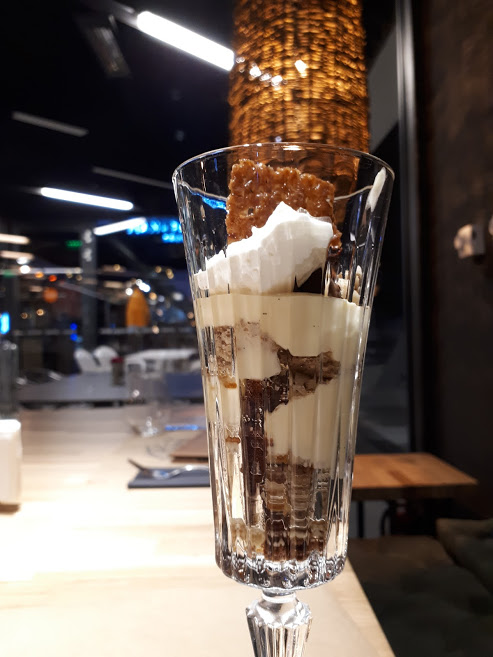
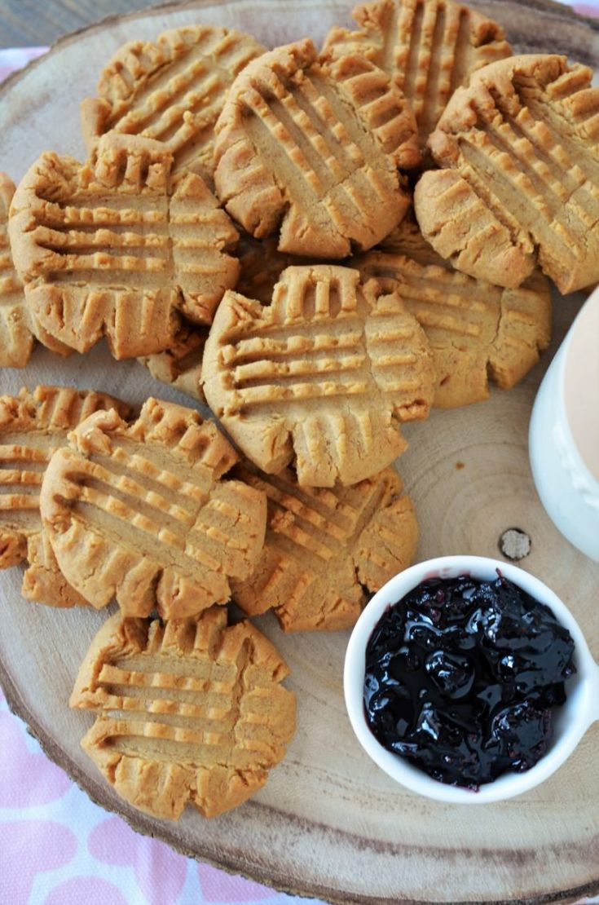
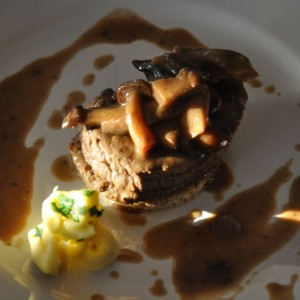

Prăjitură cu brânză dulce, stafide și aluat fraged cu unt sau untură | Savori Urbane
2021.03.24 11:28
Acasa Retete A-Z Paine Clatite Gogosi Retete de cozonac Retete de Pasti Retete de pasca Oua rosii vopsite natural Retete de drob Retete cu miel Paste Pizza Carne Carne de porc Carne de pasare Carne de vita vitel Carne tocata chiftele carnati Carne de miel iepure vanat Retete cu miel Organe ficat limba creier La gratar Mezeluri de casa Ciorbe si supe Deserturi Prajituri torturi fursecuri Patiserie dulce Dulciuri de casa budinci inghetata Retete cu visine Retete cu capsuni Dulciuri de post Inghetata de casa Inghetata Retete de Sarbatori Retete festive Retete de mucenici Retete de Craciun si Revelion Ce gatim de Craciun si Revelion? Retete de chec Aperitive Salate Prajituri Torturi Fursecuri Retete traditionale Conserve de fructe Gemuri si dulceturi Sirop de fructe Compoturi Conserve de legume Muraturi Retete de zacusca Retete cu gogosari Vegetale Retete cu cartofi Cartofi noi Retete cu ciuperci Retete cu varza Retete cu mamaliga Retete cu orez Retete cu avocado Retete cu urzici Retete cu spanac Retete cu leurda Retete cu conopida Retete cu dovlecei Retete cu vinete Retete cu fasole boabe Retete cu fasole pastai Retete cu morcovi Retete cu rosii Retete cu cartofi dulci Retete cu gogosari Retete cu ardei Retete cu dovleac placintar Retete cu porumb Retete cu masline Retete cu praz Retete cu linte Retete cu naut Retete cu sfecla rosie Retete cu gulii Retete cu sparanghel Patiserie sarata, saratele, placinte Lactate de casa Sosuri Peste si fructe de mare Diverse Retete de post Retete de mancare de post Dulciuri de post Retete pentru Slow cooker Retete asiatice Bauturi Dieta Rina Fara gluten Overnight Oats Index cu imagini Arhiva retete Sign in Welcome! Log into your account numele dvs de utilizator parola dvs V-ați uitat parola? Politică de confidențialitate Password recovery Recuperați-vă parola adresa dvs de email Despre noi Cine gateste – Savori Urbane Actiuni caritabile Colaborari Acasa Lista retete de la A la Z – index alfabetic Jam Session Blogroll Concursuri Cartea de oaspeti De la cititori Harta site Politica de cookies Politică de confidențialitate Contact Sign in Bine ați venit! Autentificați-vă in contul dvs numele dvs de utilizator parola dvs Forgot your password? Get help Politică de confidențialitate Password recovery Recuperați-vă parola adresa dvs de email O parola va fi trimisă pe adresa dvs de email. Savori Urbane Acasa Retete A-Z Paine Clatite Gogosi Retete de cozonac Retete de Pasti Retete de pasca Oua rosii vopsite natural Retete de drob Retete cu miel Paste Pizza Carne Carne de porc Carne de pasare Carne de vita vitel Carne tocata chiftele carnati Carne de miel iepure vanat Retete cu miel Organe ficat limba creier La gratar Mezeluri de casa Ciorbe si supe Deserturi Prajituri torturi fursecuri Patiserie dulce Dulciuri de casa budinci inghetata Retete cu visine Retete cu capsuni Dulciuri de post Inghetata de casa Inghetata Retete de Sarbatori Retete festive Retete de mucenici Retete de Craciun si Revelion Ce gatim de Craciun si Revelion? Retete de chec Aperitive Salate Prajituri Torturi Fursecuri Retete traditionale Conserve de fructe Gemuri si dulceturi Sirop de fructe Compoturi Conserve de legume Muraturi Retete de zacusca Retete cu gogosari Vegetale Retete cu cartofi Cartofi noi Retete cu ciuperci Retete cu varza Retete cu mamaliga Retete cu orez Retete cu avocado Retete cu urzici Retete cu spanac Retete cu leurda Retete cu conopida Retete cu dovlecei Retete cu vinete Retete cu fasole boabe Retete cu fasole pastai Retete cu morcovi Retete cu rosii Retete cu cartofi dulci Retete cu gogosari Retete cu ardei Retete cu dovleac placintar Retete cu porumb Retete cu masline Retete cu praz Retete cu linte Retete cu naut Retete cu sfecla rosie Retete cu gulii Retete cu sparanghel Patiserie sarata, saratele, placinte Lactate de casa Sosuri Peste si fructe de mare Diverse Retete de post Retete de mancare de post Dulciuri de post Retete pentru Slow cooker Retete asiatice Bauturi Dieta Rina Fara gluten Overnight Oats Index cu imagini Arhiva retete Acasă Deserturi Patiserie dulce Prăjitură cu brânză dulce, stafide și aluat fraged cu unt sau untură Deserturi Patiserie dulce Prajituri - torturi - fursecuri Retete traditionale
Prăjitură cu brânză dulce, stafide și aluat fraged cu unt sau untură
De către Diana - 30 ianuarie 2021 2 Facebook WhatsApp Print Pinterest Email Twitter
Prăjitură cu brânză dulce, stafide și aluat fraged cu unt sau untură. Rețeta de prăjitură poronio cu brânză de vaci. Cum se face plăcinta simplă cu brânză de vacă și stafide? Rețete de prăjituri cu brânză. Rețete de prăjituri ardelenești. Rețete de prăjituri la tavă.
Această prăjitură cu brânză la tavă este făcută după rețeta bunicii mele. Noi îi spuneam „ túrós pite ”, (în limba maghiară) pite fiind o prăjitură simplă, la tavă, din ingrediente foarte simple: un aluat fraged cu unt sau untură și umplutură de brânză, fructe sau gem. În Ardeal prăjiturile cu aluat fraged sunt cunoscute ca „poronio” (poronyo sau porono). În limba maghiară „porhanyos” vine de la „por” care înseamnă praf. Adică ceva foarte fraged, sfărâmicios ( omlos mai zic maghiarii). Pe la Cluj, Sălaj se zice „poronio cu scoacă ” unde scoacă= brânză de vaci.
Cand făcea bunica aceste „pite” cu mere, brânză sau dovleac (vă las rețetele la final) se asigura că stratul de umplutură era gros, de cel puțin 3 ori cât aluatul. Ca în orice rețetă cu brânză de vaci, bunica punea un pic de sare, vanilie, coajă rasă de lămâie și, desigur, stafide.
Această prăjitură cu brânză dulce a fost făcută de junior (clasa a 5-a) pentru un proiect de la școală. Eu i-am dat rețeta iar el și-a cântărit ingredientele și a făcut singur toată prăjitura, îndrumat și supravegheat de mine. A folosit cu succes cântarul de bucătărie, mixerul și robotul de frământat. Nu l-am ajutat decât la partea cu cuptorul. Am pozat liniștită totul și nu a mai trebuit să mă spăl de 100 de ori pe mâini :)) Iată rezultatul final și mândrul bucătar!
Din aceste cantități rezultă o tavă de 25×38 cm cu prăjitură cu brânză dulce, stafide și aluat fraged sau poronio cu brânză.
Prăjitură cu brânză dulce, stafide și aluat fraged cu unt sau untură Tipareste lista de ingrediente Timp de preparare 20 minute Timp de gatire 50 minute Timp Total 1 ora 10 minute Autor: Savori Urbane Portii: 1 tavă de 25x38 cm cu prăjitură cu brânză Ingrediente - savoriurbane.com Pentru aluat: 500 g făină albă 000 250 g unt 82% sau 100 g unt și 100 g untură 125 g zahăr pudră 2 ouă + 2 gălbenușuri 100 g smântână cu min.20% coaja rasă de lămâie (o jumătate de linguriță rasă) o linguriță extract de vanilie sau 2 pliculețe zahăr vanilat un praf bun de sare Pentru umplutură: 1200 g brânză de vaci (grasă, bine scursă) 2 ouă + 2 albușuri 200 g zahăr 150 g griș 150 g stafide sau merișoare deshidratate coaja rasă de lămâie (o linguriță bună) o linguriță extract de vanilie sau 2 pliculețe zahăr vanilat un praf bun de sare Pentru decor: 1 ou 3.5.3251
Cum se face rețeta de prăjitură cu brânză dulce, stafide și aluat fraged cu unt sau untură?
Aluat fraged cu unt sau untură (poronio)
Pentru aluat am separat 2 ouă (din 4) și am păstrat cele două albușuri pentru umplutură. Restul ingredientelor le-am frământat repede pentru că nu dorim să se formeze rețeaua de gluten. La aluaturile fragede secretul este frământatul rapid și odihna la rece.
Iată aluatul.
L-am învelit in folie de plastic și l-am pus o oră la rece, în frigider.
Cum se face umplutura de brânză dulce de vacă cu spumă pentru plăcintă sau prăjitură poronio?
Brânza de vaci trebuie să fie grasă (nu dietetică) și să fie bine scursă de zer (din cea pentru papanași ). Nu se poate înlocui cu ricotta sau urdă deoarece acestea NU sunt același lucru! Urda sau ricotta nu au grăsime și nici fermenți (nu sunt acrișoare). În străinătate găsiți Quark, Topfen, cottage cheese sau queso blanco. Sau vă faceți brânză dulce de vaci acasă, din lapte rețeta aici .
Coaja rasă de lămâie și portocală poate fi păstrată la rece vezi aici cum se face răzătura de citrice. Eu am mereu 2 borcănele în frigider.
Pentru umplutura de brânză de vaci am pregătit ingredientele. Brânza de vaci (grasă și bine scursă de zer), ouăle întregi și albușurile rămase de la aluat, zahărul, grișul, sarea, vanilia, coaja rasă de lămâie și stafidele. Unora nu le plac stafidele așa că acestea pot fi înlocuite cu merișoare deshidratate sau nu se mai pun deloc.
Am separat cele 2 ouă întregi și am pus albușurile deoparte, împreună cu cele 2 rămase de la aluat. Într-un castron am pus brânza, sarea, vanilia (zahărul vanilat), coaja rasă de lămâie, gălbenușurile și grișul. Am amestecat bine, am acoperit vasul și l-am dat la frigider pentru o oră (oricum se odihnește și aluatul). Astfel grișul se va umfla de la lichidele din brânză.
După ce am scos castronul din frigider am adăugat stafidele. Aceste se pun uscate și au și ele rol în absorbirea umidității.
Separat am batut cele 4 albușuri cu un praf de sare. Când spuma a devenit suficient de fermă am adăugat zahărul tos și am mai bătut până ce am obținut o spumă densă, netedă și lucioasă (ca la bezele ).
Am înglobat treptat din crema de brânză în spumă amestecând cu grijă cu o spatulă. În 3 ture am încorporat totul.
Umplutura aceasta de brânză cu spumă este mult mai aerată și mai lejeră decât cea făcută cu ouăle întregi.
Cum se montează o prăjitură cu brânză dulce de vaci, stafide și aluat fraged?
După ce am scos aluatul din frigider l-am împărțit în 2 părți de circa 450 și 650 g. Nu se fac foi egale deoarece cea de jos trebuie să îmbrace un pic și pereții formei sau tăvii. Partea mică am pus-o înapoi în frigider și partea mai mare am lăsat-o pe masă. Am întins foaia pe un pic de făină astfel încăt să ajungă pe fundul tăvii și vreo 2 cm în sus pe marginea ei.
Am așezat-o în tava de 25×38 cm așternută cu hârtie de copt și am aranjat apoi marginile.
Am pus deasupra compoziția de brânză. Se vede că nu este fluidă ci bine legată.
Am nivelat frumos brânza cu spatula.
Am întins și restul de aluat și l-am perforat ușor cu această rolă de frăgezit carnea. Evident că puteți folosi și furculița.
Cu ajutorul sucitorului străbunicii mele am ridicat aluatul și l-am așezat cu grijă peste brânză.
Am nivelat frumos cu palma, am aranjat marginile și apoi am pensulat prăjitura cu un ou bine bătut cu un strop de sare.
Coacere prăjitură cu brânză de vaci și stafide
Am preîncins bine cuptorul la 170°C pe funcția sus+jos+ventilație (treapta medie la cuptoarele pe gaz). Când acesta a fost bine încins am introdus tava cu prăjitură cu brânză dulce pe care am copt-o cca. 50-55 de minute la 170°C. Partea de sus trebuie să fie aurie, frumos rumenită.
Ce arome faine am în bucătărie! De vanilie și coajă rasă de lămâie. Am lăsat un pic prăjitura la răcit în tavă și apoi am scos-o cu tot cu hârtia de copt pe un fund curat de lemn sau pe un grilaj de bucătărie.
Servire plăcintă cu brânză sau scoacă și aluat poronio
După răcorire am tăiat felii frumoase de prăjitură cu brânză dulce, stafide și aluat fraged. Sunt perfecte!
Foile de aluat fraged sunt bine coapte atât sus cât și jos iar stratul de umplutură de brânză este generos, cremos, aromat și extra gustos. Totul se topește în gură iar crema de brânză este umedă, nu seacă. Un poronio cu brânză sau túrós pite ca la bunica acasa!
Nouă ne place prăjitura călduță dar este grozavă și rece, după 2-3 zile. Prăjitura cu brânză se păstrează bine 3-4 zile la cămară răcoroasă sau la frigider, învelită în hârtie de copt.
V-am promis mai sus alte rețete cu aceast aluat fraged minunat. Cea mai cunoscută este poronio cu mere sau almás pite rețeta aici .
Sau așa, cu aluat cu mai puțin unt și mai multă untură vezi aici .
Am pomenit și de prăjitura cu dovleac (bostan) plăcintar, nucă, scorțișoară și aluat fraged vezi aici .
O altă plăcintă faină este cea cu brânză de vaci, stafide și aluat dospit rețeta aici .
Cred că v-am făcut poftă cu această prăjitură cu brânză dulce, stafide și aluat fraged cu unt sau untură și că veți testa rețeta noastră de poronio cu brânză!
Aici găsiți mai multe rețete de prăjituri sau plăcinte cu brânză dulce de vaci.
Poate te intereseaza si:
Aluat fraged cu untură sau unt și smântână pentru prăjitură sau plăcintă Aluat fraged cu untură sau unt și smântână pentru prăjitură sau plăcintă cu mere, brânză, gem, dovleac. […] Placinta cu branza dulce de vaci si stafide Placinta cu branza dulce de vaci si stafide. O prajitura simpla cu branza de vaci, cu multa vanilie si […] Placinta cu branza dulce si aluat dospit cu untura sau unt Placinta cu branza dulce si aluat dospit cu untura sau unt. Rulada cu branza dulce de vaci si stafide - […] Branzoaice trandafiri cu branza de vaci si stafide Branzoaice trandafiri cu branza de vaci si stafide. Branzoaice pufoase in forma de trandafir din aluat […] Budinca de clatite cu branza dulce de vaci si stafide la cuptor Budinca de clatite cu branza dulce de vaci si stafide - la cuptor. Cum se face budinca de clatite […] Cheesecake simplu cu branza dulce si stafide sau pasca cu aluat fraged cu cacao Cheesecake simplu cu branza dulce si stafide sau pasca cu aluat fraged cu cacao (aluat de tarta). O […] Facebook WhatsApp Print Pinterest Email Twitter Articolul precedent Fasole cu afumătură (costiță, kaiser, șunculiță, ciolan, jambon afumat) Articolul următor Tapenade rețeta de pastă de măsline negre și verzi cu usturoi și capere Diana https://savoriurbane.com/ Articol scris de Diana Rajos-Nicolin .. Afla mai multe citind sectiunea CINE GATESTE .2 COMENTARII
Prajitura cu branza de vaci si aluat dospit - reteta simpla | Savori Urbane 30 ianuarie 2021 at 06:17[ ] O alta prajitura faina cu branza de vaci este cea cu aluat fraged (poronio) reteta aici. [ ]
Răspundeți Aluat fraged cu untură sau unt și smântână pentru prăjitură sau plăcintă | Savori Urbane 5 februarie 2021 at 10:41[ ] Sau clasica prăjitură cu brânză dulce și stafide vezi aici. [ ]
RăspundețiLĂSAȚI UN MESAJ Renunțați la răspuns
Acest sit folosește Akismet pentru a reduce spamul. Află cum sunt procesate datele comentariilor tale .
Cauta o reteta
Cine gateste
Oana 1270 ARTICOLE 6393 COMENTARII https://savoriurbane.com/ Diana 946 ARTICOLE 239 COMENTARII https://savoriurbane.com/Ne gasesti si aici
Ultimele retete
Pască cu brânză dulce și aluat pufos de cozonac (cu multă...
Oana - 23 martie 2021 2 Pască cu brânză dulce și aluat pufos de cozonac (cu multă umplutură) - rețeta tradițională. Cum se face pasca cu brânză de vaci, stafide...Cartofi rumeniți cu salvie și portocale rețeta la tigaie sau...
20 martie 2021Cremșnit sau cremeș la pahar rețeta simplă de desert cu...
14 martie 2021Prăjitură cu mere la tigaie (fără cuptor) răsturnată cu mere...
10 martie 2021Paste cu avocado spaghetti cu sos cremos cu usturoi și...
7 martie 2021Rețete de mucenici moldovenești (copți) sau de mucenici muntenești (fierți)
5 martie 2021Pui cu orez și ciuperci rețeta rapidă și dietetică
26 februarie 2021Tort de biscuiți cu ciocolată cel mai simplu tort fără...
24 februarie 2021Plăcintă cu telemea sau brânză de burduf și mărar rețeta...
19 februarie 2021Pui marinat cu usturoi, rozmarin și lămâie la cuptor
11 februarie 2021Aluat fraged cu untură sau unt și smântână pentru prăjitură sau...
5 februarie 2021Tapenade rețeta de pastă de măsline negre și verzi cu...
4 februarie 2021Prăjitură cu brânză dulce, stafide și aluat fraged cu unt sau...
30 ianuarie 2021Fasole cu afumătură (costiță, kaiser, șunculiță, ciolan, jambon afumat)
29 ianuarie 2021Plăcintă pufoasă cu ciuperci, cașcaval, smântână și usturoi la cuptor
26 ianuarie 2021Aripioare marinate cu portocale, unt, ierburi aromatice coapte în pungă
23 ianuarie 2021Ciorbă de pipote și inimi cu smântână și usturoi
22 ianuarie 2021Focaccia cu brânză și smântână rețeta de plăcintă pufoasă la cuptor
19 ianuarie 2021Crêpes Suzette rețeta de clătite franțuzești cu portocale, unt și caramel
17 ianuarie 2021Tort Cremșnit rețeta de Cremeș sau Krémes Torta
8 ianuarie 2021Categorii retete
Arhiva retete
Arhiva retete Selectează luna martie 2021 (6) februarie 2021 (6) ianuarie 2021 (10) decembrie 2020 (16) noiembrie 2020 (17) octombrie 2020 (17) septembrie 2020 (4) august 2020 (10) iulie 2020 (20) iunie 2020 (13) mai 2020 (16) aprilie 2020 (19) martie 2020 (24) februarie 2020 (10) ianuarie 2020 (25) decembrie 2019 (24) noiembrie 2019 (16) octombrie 2019 (17) septembrie 2019 (15) august 2019 (9) iulie 2019 (18) iunie 2019 (15) mai 2019 (22) aprilie 2019 (19) martie 2019 (24) februarie 2019 (23) ianuarie 2019 (31) decembrie 2018 (33) noiembrie 2018 (34) octombrie 2018 (23) septembrie 2018 (32) august 2018 (39) iulie 2018 (52) iunie 2018 (35) mai 2018 (40) aprilie 2018 (44) martie 2018 (37) februarie 2018 (36) ianuarie 2018 (44) decembrie 2017 (36) noiembrie 2017 (37) octombrie 2017 (26) septembrie 2017 (35) august 2017 (40) iulie 2017 (29) iunie 2017 (25) mai 2017 (27) aprilie 2017 (21) martie 2017 (39) februarie 2017 (28) ianuarie 2017 (24) decembrie 2016 (25) noiembrie 2016 (12) octombrie 2016 (27) septembrie 2016 (26) august 2016 (14) iulie 2016 (21) iunie 2016 (27) mai 2016 (17) aprilie 2016 (16) martie 2016 (32) februarie 2016 (33) ianuarie 2016 (19) decembrie 2015 (22) noiembrie 2015 (10) octombrie 2015 (13) septembrie 2015 (32) august 2015 (27) iulie 2015 (36) iunie 2015 (29) mai 2015 (23) aprilie 2015 (25) martie 2015 (37) februarie 2015 (28) ianuarie 2015 (17) decembrie 2014 (23) noiembrie 2014 (35) octombrie 2014 (28) septembrie 2014 (31) august 2014 (17) iulie 2014 (39) iunie 2014 (47) mai 2014 (20) aprilie 2014 (36) martie 2014 (24) februarie 2014 (26) ianuarie 2014 (38) decembrie 2013 (22)Cartea de oaspeti Savori Urbane impresii de la cititori
Cartea de Oaspeti Savori Urbane – impresii de la cititori. Deoarece ne scrieti foarte multe randuri pe Facebook, am decis sa cream aceasta Carte de Oaspeti in care sa va lasati impresiile generale despre blogul nostru (fie ele si critice).
Citeste mai mult...
Comentarii recente
Pasca cu smantana si aluat de cozonac | Savori Urbane la Pască cu brânză dulce și aluat pufos de cozonac (cu multă umplutură) rețeta tradițională Pasca simpla reteta traditionala | Savori Urbane la Pască cu brânză dulce și aluat pufos de cozonac (cu multă umplutură) rețeta tradițională Pască cu brânză dulce și aluat pufos de cozonac (cu multă umplutură) - rețeta tradițională | Savori Urbane la Cum se face branza de vaci de casa reteta veche Pască cu brânză dulce și aluat pufos de cozonac (cu multă umplutură) - rețeta tradițională | Savori Urbane la Pasca cu smantana si aluat de cozonac Crema de branza cu marar sau alte verdeturi de primavara | Savori Urbane la Ruladă aperitiv cu șuncă și brânză rețeta simplă și rapidă Drob de miel in foi de placinta | Savori Urbane la Cum se fierbe șunca afumată de casă sau jambonul pentru Paști?Categorii retete
Actiuni caritabile Aperitive Bauturi Calatorii Carne Carne de miel iepure vanat Carne de pasare Carne de porc Carne de vita vitel Carne tocata chiftele carnati Organe ficat limba creier Colaborari Concursuri Conserve gem dulceata De la cititori Deserturi Dulciuri de casa budinci inghetata Patiserie dulce Prajituri torturi fursecuri Diverse Fara gluten Jam Session Lactate de casa Mezeluri de casa Overnight Oats Paine chifle Paste Taietei Galuste Patiserie sarata pizza placinte Peste si fructe de mare Retete asiatice exotice Retete de mancare de post Retete Dieta Rina Retete traditionale Salate reci si calde SARBATORI-Craciun-Pasti Slow cooker Sosuri dressinguri Supe creme ciorbe Vegetale leguminoaseCele mai indragite retete
Prăjitură de casă cu mac și cremă de vanilie rețeta...
Sirop de visine fara fierbere, crud, la rece
Tocană cu ceapă și carne rețeta ardelenească de papricaș de...
Plăcintă cu telemea sau brânză de burduf și mărar rețeta...
Fursecuri cu ciocolata crinkles reteta de fursecuri crapate
Sos pentru friptura reteta pas cu pas
Placinte cu branza la tigaie reteta fara drojdie
Papanasi cu branza dulce de vaci reteta bucovineana
Vino in GRUPUL SAVORI URBANE de pe Facebook - locul unde discutam despre retete, ingrediente, tehnici de preparare, meniuri si multe altele! Click aici pentru inscriere.
Despre Savori Urbane
Parteneri
Rețete cu Laura Laurențiu
Gastro Art Cosmin Dragomir
Laura Adamache
Rețete recomandate
Aperitive festive
Ciorbă de burtă
Ciorbă de perișoare
Ciorbă rădăuțeană
Ardei umpluți rețeta străbunicii
Găluște pufoase din gris
Salata de boeuf
Sarmale tradiționale
Chiftele simple și gustoase
Paste a la carbonara
Pâine simplă de casă
Sărățele fragede cu brânză
Răcituri, piftii
Friptură de porc la tavă
Mezeluri naturale de casă
Cremă de zahăr ars
Clătite fragede
Cozonac pufos cu nucă
Prăjitură cu mere
Prăjitura simplă cu vișine
Gogoși pufoase ca la bunica
Prăjitura Albă ca Zăpada
Prăjitura Albinița foi cu miere
Fursecuri fragede cu unt 3 2 1
Tort Diplomat cu fructe și frișcă
Tort Diplomat clasic cu pișcoturi
Tiramisu clasic italian
Pagini
Acasa Arhiva retete Cartea de oaspeti Impresii de la cititori Cine gateste Savori Urbane Contact Harta site Index retete Lista retete de la A la Z index alfabetic Politică de confidențialitate Politica de cookiesIn curand retete video! Aboneaza-te!
Grupul Savori Urbane de pe Facebook
DESPRE NOI COPYRIGHT ©2014-2020 Savori Urbane. Toate textele si imaginile apartin autorului Savori Urbane. Publicarea lor integrala sau partiala se poate face doar cu acordul scris al autorilor. Toate drepturile sunt rezervate. Legea nr 8/1996 privind dreptul de autor si drepturile conexe. Savori Urbane este marcă înregistrată la OSIM. Contactați-ne: [email protected] URMAȚI-NE Despre noi Cine gateste – Savori Urbane Actiuni caritabile Colaborari Acasa Lista retete de la A la Z – index alfabetic Jam Session Blogroll Concursuri Cartea de oaspeti De la cititori Harta site Politica de cookies Politică de confidențialitate Contact FOR THOSE ABOUT TO COOK, WE SALUTE YOU! Acest blog folosește cookies. Prin continuarea navigării pe blogul nostru confirmi acceptarea utilizării fişierelor de tip cookie conform Politicii de Cookie. Accept Citeste mai mult... Politica de cookies Închide
Privacy Overview
This website uses cookies to improve your experience while you navigate through the website. Out of these cookies, the cookies that are categorized as necessary are stored on your browser as they are essential for the working of basic functionalities of the website. We also use third-party cookies that help us analyze and understand how you use this website. These cookies will be stored in your browser only with your consent. You also have the option to opt-out of these cookies. But opting out of some of these cookies may have an effect on your browsing experience. Necesare Necesare Întotdeauna activateNecessary cookies are absolutely essential for the website to function properly. This category only includes cookies that ensures basic functionalities and security features of the website. These cookies do not store any personal information.
Non-necesare Non-necesareAny cookies that may not be particularly necessary for the website to function and is used specifically to collect user personal data via analytics, ads, other embedded contents are termed as non-necessary cookies. It is mandatory to procure user consent prior to running these cookies on your website.
Inline Inline- Perdele scurte Bucatarie - eMAG.ro
- Convertor unitati masura Bucatarie | Untdelemn de la Bunica
- Cu Medi in bucatarie
- Perdele | FAVI.ro
- Poze : pâine, bagheta, cină, alimente, carbohidrați, unt ...
- Cum se face GHEE | Bucatarie Indiana Vegetariana
- Crumble cu mere - retete de prajituri - Retete Practice
- Malay Roti – Lipii fine si moi cu Unt | Bucatarie Indiana ...
- Reţetă Fursecuri fragede cu unt - Arome în bucătărie
- Perdele bucătărie | FAVI.ro
- Perdele scurte Bucatarie - eMAG.ro
150 g unt la temperatura camerei. 100 g zahar pudra. 6 oua . 150 g ciocolata amaruie. 1 lingura cacao. 2 pliculețe zahar vanilat. 75 g zahar tos. 150 g faina. o priza sare. Mai avem nevoie. unt pentru uns tava
- Convertor unitati masura Bucatarie | Untdelemn de la Bunica
100 gr unt moale, la temperatura camerei 3-4 linguri lapte rece 1 lingurita sare aprox 150 ml apa. 1 cana = 350 ml. METODA Faceti un aluat fin si moale din fainuri + sare + lapte + 2 linguri unt moale (nu topit !) + apa. Turnati apa cate putin, nu toata deodata. Cantitatea de apa folosita depinde mult de tipul de faina pe care il aveti.
- Cu Medi in bucatarie
o lingură de unt; sare, piper; Mod de preparare dorada la cuptor cu sparanghel tras în unt. Peştele se curăţă de măruntaie (asta dacă nu aveţi noroc să luaţi peşte eviscerat) şi solzi, se spală şi se şterge uşor cu un prosop de hârtie. Se crestează peştii pe ambele părţi (4-5 tăieturi sunt suficiente).
- Perdele | FAVI.ro
Sare O linguriţă rasă = 10 g Făină O cană rasă = 250 g de făină Un pahar plin = 125 g O lingură = 15 g O lingură cu vârf = 25 g O. Citește mai multe.
- Poze : pâine, bagheta, cină, alimente, carbohidrați, unt ...
Perdea Velaria in unt lucios cu model baroc, 440x175 cm. 270,00 lei. Detaliu Spre magazin. 2. În stoc. Perdea Velaria ivoire cu turcoaz, 270x155 cm. 180,00 lei. ... Bucătărie și sufragerie Echipamente baie Living Dormitor Camera copiilor Hol și coridor Promoții Contactează-ne. locuintefrumoase@favi.ro ...
- Cum se face GHEE | Bucatarie Indiana Vegetariana
Știu că-ți place să gătești și să pui pe masă bucate făcute cu dragoste. Vrei ca totul să iasă ca la carte, iar eu vin în ajutorul tău cu un Convertor pentru unitățile de măsură în bucătărie. Acum poți calcula rapid câți mililitri are o linguriță de ulei sau câte grame sunt într-o cană de făină.
- Crumble cu mere - retete de prajituri - Retete Practice
Unt de arahide crocant "Rich Roast" 100%, fara aditivi, zahar, conservanti, 280g Meridian în stoc. Livrat de EcoNatural 21 26 Lei. 20 17 Lei. Adauga in Cos. 0 review-uri (0) Compara. Unt de caju, Obio, bio, fara gluten, fara sare, 250g ultimele 3 produse. 70 00 Lei (-31%) 48 00 Lei ...
- Malay Roti – Lipii fine si moi cu Unt | Bucatarie Indiana ...
Re: Cum facem unt de casa. da Laura, ar trebui sa iasa caci are grasime destula, dar iti va iesi un unt care va fi mai potrivit pentru mancaruri sarate decat la deserturi. din smantana dulce iese untul "dulce" cum ar veni, iar din creme fraiche (care e similara cu smantana acra) iese un unt "fermentat".
- Reţetă Fursecuri fragede cu unt - Arome în bucătărie
Această prăjitură cu brânză la tavă este făcută după rețeta bunicii mele. Noi îi spuneam „túrós pite”, (în limba maghiară) pite fiind o prăjitură simplă, la tavă, din ingrediente foarte simple: un aluat fraged cu unt sau untură și umplutură de brânză, fructe sau gem. În Ardeal prăjiturile cu aluat fraged sunt cunoscute ca „poronio” (poronyo sau porono). În ...
- Perdele bucătărie | FAVI.ro
Explorează selecția noastră de veselă, pahare, tacâmuri, accesorii de bucătărie și nu numai pentru a completa decorul meselor tale. Gama noastră include o varietate de stiluri, texturi, modele și materiale care să se potrivească stilului mesei tale — clasic sau de sezon.
150 g unt la temperatura camerei. 100 g zahar pudra. 6 oua . 150 g ciocolata amaruie. 1 lingura cacao. 2 pliculețe zahar vanilat. 75 g zahar tos. 150 g faina. o priza sare. Mai avem nevoie. unt pentru uns tava
100 gr unt moale, la temperatura camerei 3-4 linguri lapte rece 1 lingurita sare aprox 150 ml apa. 1 cana = 350 ml. METODA Faceti un aluat fin si moale din fainuri + sare + lapte + 2 linguri unt moale (nu topit !) + apa. Turnati apa cate putin, nu toata deodata. Cantitatea de apa folosita depinde mult de tipul de faina pe care il aveti.
o lingură de unt; sare, piper; Mod de preparare dorada la cuptor cu sparanghel tras în unt. Peştele se curăţă de măruntaie (asta dacă nu aveţi noroc să luaţi peşte eviscerat) şi solzi, se spală şi se şterge uşor cu un prosop de hârtie. Se crestează peştii pe ambele părţi (4-5 tăieturi sunt suficiente).
Sare O linguriţă rasă = 10 g Făină O cană rasă = 250 g de făină Un pahar plin = 125 g O lingură = 15 g O lingură cu vârf = 25 g O. Citește mai multe.
Perdea Velaria in unt lucios cu model baroc, 440x175 cm. 270,00 lei. Detaliu Spre magazin. 2. În stoc. Perdea Velaria ivoire cu turcoaz, 270x155 cm. 180,00 lei. ... Bucătărie și sufragerie Echipamente baie Living Dormitor Camera copiilor Hol și coridor Promoții Contactează-ne. locuintefrumoase@favi.ro ...
Știu că-ți place să gătești și să pui pe masă bucate făcute cu dragoste. Vrei ca totul să iasă ca la carte, iar eu vin în ajutorul tău cu un Convertor pentru unitățile de măsură în bucătărie. Acum poți calcula rapid câți mililitri are o linguriță de ulei sau câte grame sunt într-o cană de făină.
Unt de arahide crocant "Rich Roast" 100%, fara aditivi, zahar, conservanti, 280g Meridian în stoc. Livrat de EcoNatural 21 26 Lei. 20 17 Lei. Adauga in Cos. 0 review-uri (0) Compara. Unt de caju, Obio, bio, fara gluten, fara sare, 250g ultimele 3 produse. 70 00 Lei (-31%) 48 00 Lei ...
Re: Cum facem unt de casa. da Laura, ar trebui sa iasa caci are grasime destula, dar iti va iesi un unt care va fi mai potrivit pentru mancaruri sarate decat la deserturi. din smantana dulce iese untul "dulce" cum ar veni, iar din creme fraiche (care e similara cu smantana acra) iese un unt "fermentat".
Această prăjitură cu brânză la tavă este făcută după rețeta bunicii mele. Noi îi spuneam „túrós pite”, (în limba maghiară) pite fiind o prăjitură simplă, la tavă, din ingrediente foarte simple: un aluat fraged cu unt sau untură și umplutură de brânză, fructe sau gem. În Ardeal prăjiturile cu aluat fraged sunt cunoscute ca „poronio” (poronyo sau porono). În ...
Explorează selecția noastră de veselă, pahare, tacâmuri, accesorii de bucătărie și nu numai pentru a completa decorul meselor tale. Gama noastră include o varietate de stiluri, texturi, modele și materiale care să se potrivească stilului mesei tale — clasic sau de sezon.
  